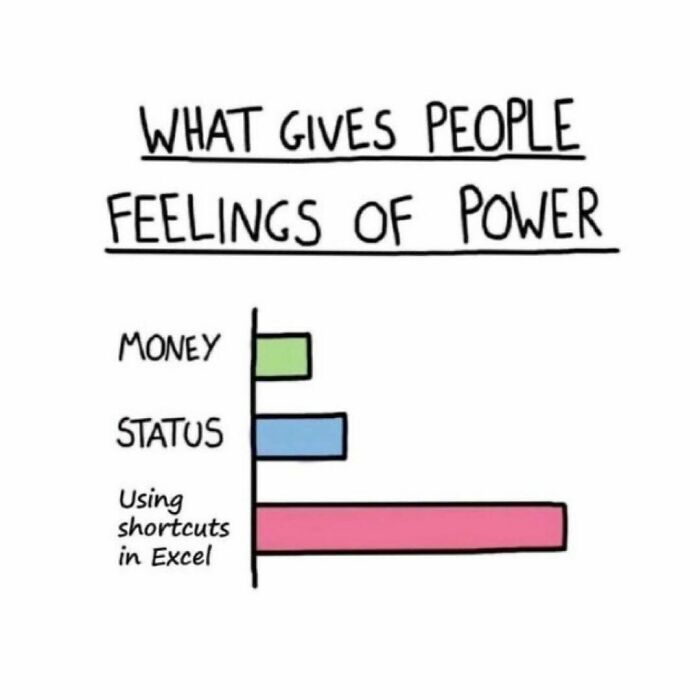

MIBE Excel Corner
Introduction
Welcome to the MIBE Excel Corner! This page is dedicated to all the key concepts, notes, and resources you need for mastering the basics of MS Excel in the Business Analytics with Excel course. Whether you’re just starting or refining your skills, you’ll find everything you need.
There are two types of pages here: - Class Notes containing explanation of the main concepts, links to official documentation, and use cases. - Exercise Instructions containing videos and step-by-step instructions to practice each week’s topics.
Being Proficient with Excel
The skills presented in this portion of the class form the foundation of effective Excel usage for business students and professionals. Mastering these fundamental techniques enables users to work more efficiently with data, reducing time spent on repetitive tasks while improving accuracy and presentation quality.
Why These Skills Matter for Business Students
Excel proficiency is essential in modern business environments where data-driven decision-making dominates. The skills demonstrated in these videos address core business needs: data collection and organization, numerical analysis, visual presentation, and efficient workflow management. Business students who master these techniques gain the ability to analyze financial data, create professional reports, manage large datasets, and communicate insights effectively through visual formatting.
Efficiency and Productivity Benefits
The techniques covered in this class dramatically reduce manual work. Instead of typing the same data 25 times or formatting cells individually, you will learn to leverage Excel’s built-in automation features. These time-saving methods will allow you to focus on analysis and interpretation rather than data entry and formatting.

Professional Presentation
Beyond efficiency, these skills enable users to create visually appealing, easy-to-interpret spreadsheets. Conditional formatting and data bars transform raw numbers into visual insights that stakeholders can quickly understand. Professional formatting enhances credibility and makes complex data more accessible to non-technical audiences.
Let’s dive in and sharpen those Excel skills!
Images and GIFs Disclaimer: Some of the images and GIFs used on this website are not owned by me. They are used for educational and illustrative purposes only. All rights belong to their respective owners. If you believe any content violates copyright, please contact me for prompt removal.